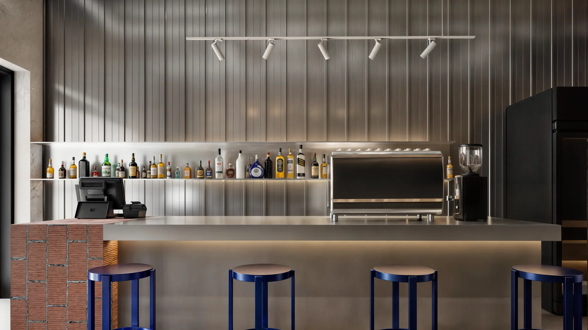
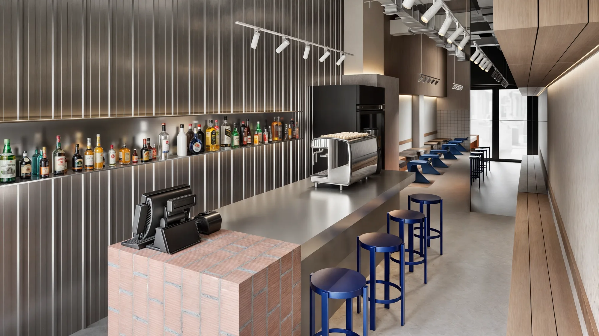
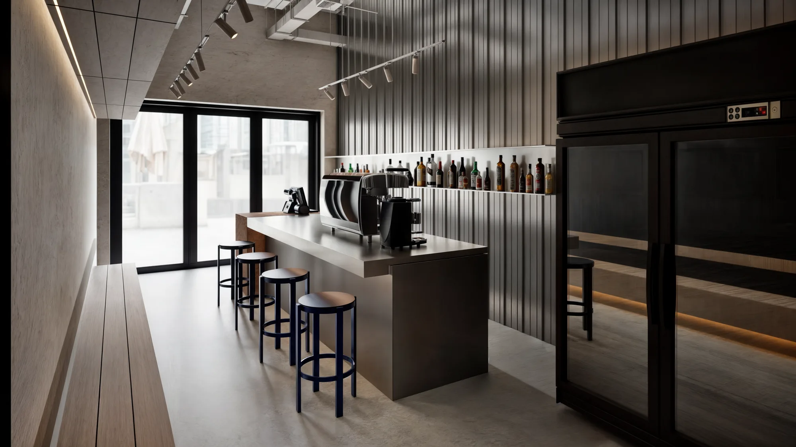
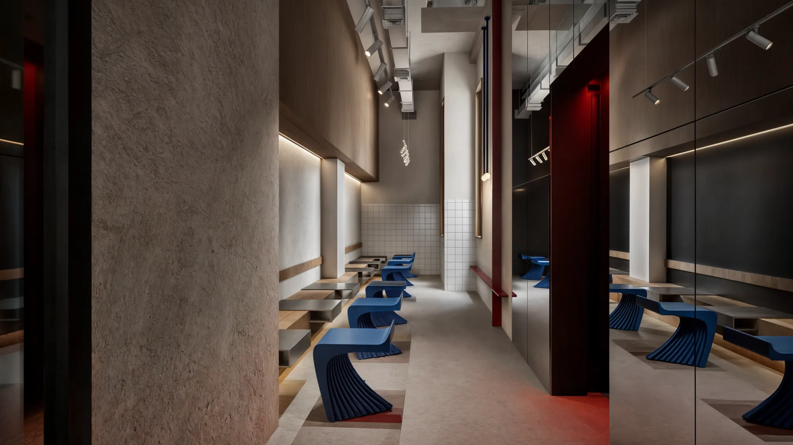
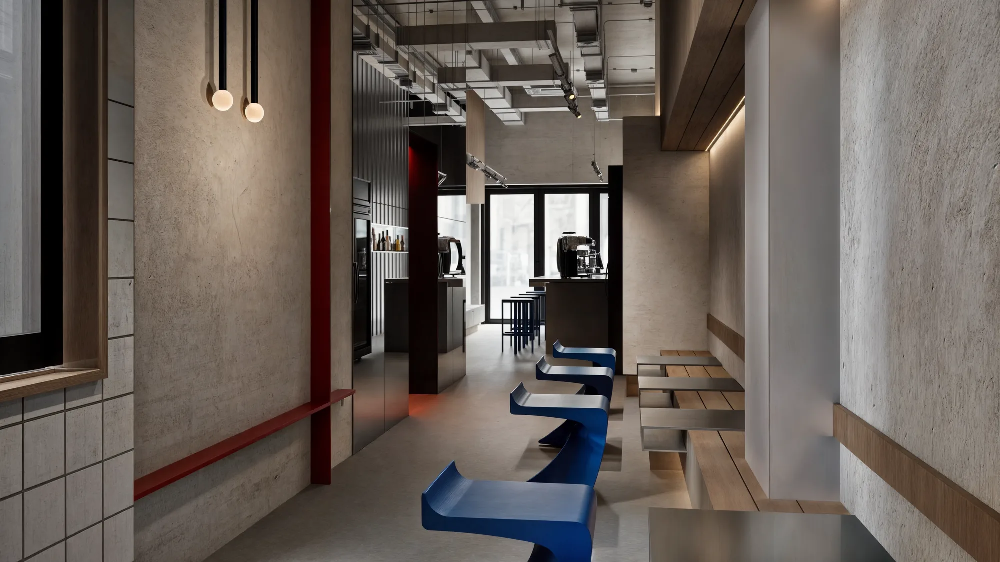
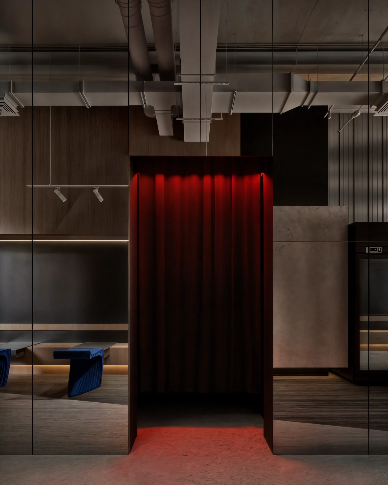
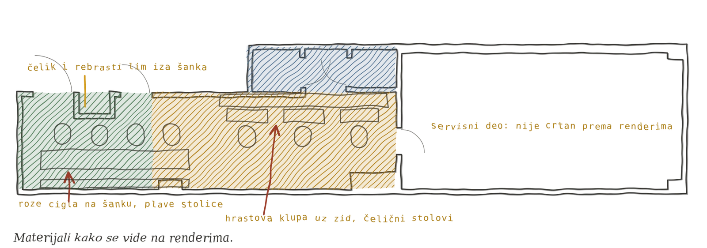
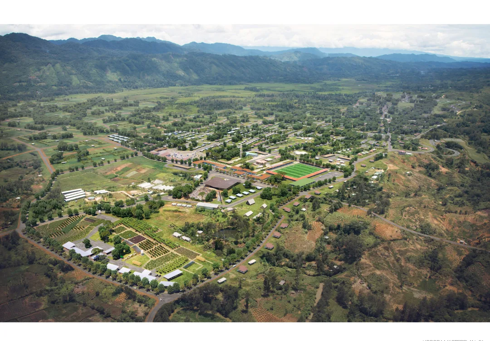

Cafe, Frankfurt am Main
Frankfurt na Majni, Nemačka, 2024
Uzani kafe u Frankfurtu na Majni, projektovan u maju 2024. za LM Mitic GmbH. Prostor je dugačka prostorija dubine oko devet metara i širine nešto preko dva, a iza nje je šira prostorija, uz bok je WC.
Šank ide uz stakleni kraj. Front šanka je od roze cigle, zid iza njega od nerđajućeg čelika i rebrastog lima, a stolice su plave. Duž dugog zida je hrastova klupa sa čeličnim stolovima ispred, pa se širina prostorije deli između gostiju i prolaza do šanka.
Renderi prikazuju enterijer. Skica rasporeda i skica sa beleškama crtane su preko CAD osnove prostorije (1:50); položaj nameštaja na njima je koncept, čitan sa rendera.






Skice

